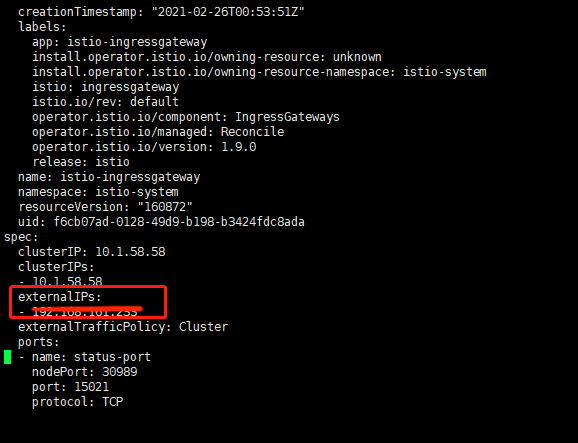

部署示例
部署官方 Bookinfo 示例应用。
该示例部署了一个用于演示多种 Istio 特性的应用，该应用由四个单独的微服务构成。 这个应用模仿在线书店的一个分类，显示一本书的信息。 页面上会显示一本书的描述，书籍的细节（ISBN、页数等），以及关于这本书的一些评论。
Bookinfo 应用分为四个单独的微服务：
productpage：这个微服务会调用details和reviews两个微服务，用来生成页面。details：这个微服务中包含了书籍的信息。reviews：这个微服务中包含了书籍相关的评论。它还会调用ratings微服务。ratings：这个微服务中包含了由书籍评价组成的评级信息。
reviews 微服务有 3 个版本：
- v1 版本不会调用
ratings服务。 - v2 版本会调用
ratings服务，并使用 1 到 5 个黑色星形图标来显示评分信息。 - v3 版本会调用
ratings服务，并使用 1 到 5 个红色星形图标来显示评分信息。
下图展示了这个应用的端到端架构。
{kind=link}
1、部署服务
进入 Istio 安装目录。
Istio 默认 自动注入 sidecar。请为
default命名空间打上标签istio-injection=enabled：$ kubectl label namespace default istio-injection=enabled namespace/default labeled使用
kubectl apply -f命令部署应用：kubectl apply -f samples/bookinfo/platform/kube/bookinfo.yaml确认所有的服务和 Pod 都已经正确的定义和启动：
kubectl get service kubectl get pod要确认
Bookinfo应用是否正在运行，请在某个 Pod 中用curl命令对应用发送请求，例如ratings：kubectl exec -it $(kubectl get pod -l app=ratings -o jsonpath='{.items[0].metadata.name}') -c ratings -- curl productpage:9080/productpage | grep -o "<title>.*</title>"
2、确定 Ingress 的 IP 和端口
现在 Bookinfo 中的所有服务都启动并运行中，您需要使应用程序可以从外部访问，例如使用浏览器。可以用 Istio Gateway 来实现这个目标。
为应用程序定义
Ingress网关kubectl apply -f samples/bookinfo/networking/bookinfo-gateway.yaml确认网关创建完成
$ kubectl get gateway NAME AGE bookinfo-gateway 32s确认
Ingress的 IP 和端口执行如下命令，明确自身 Kubernetes 集群环境支持外部负载均衡：
kubectl get svc istio-ingressgateway -n istio-system如果
EXTERNAL-IP值存在，则说明环境正在使用外部负载均衡，可以用其为 ingress gateway 提供服务。如果EXTERNAL-IP值为<none>（或持续显示<pending>），则说明环境没有提供外部负载均衡，无法使用 ingress gateway。可通过设置EXTERNAL-IP值，从外部访问。设置
EXTERNAL-IP执行如下命令，添加
EXTERNAL-IP值，即：设置外部访问，常设置为 master 的 IP。kubectl edit service istio-ingressgateway -n istio-system 图 5.3.2：EXTERNAL-IP设置 确认
istio-ingressgateway的EXTERNAL-IP值是否设置成功：kubectl get service istio-ingressgateway -n istio-system
{kind=link}
3、确认可以从集群外部访问应用
用浏览器打开网址 http://<EXTERNAL-IP>/productpage，来浏览应用的 Web 页面。如果刷新几次应用的页面，就会看到 productpage 页面中会随机展示 reviews 服务的不同版本的效果（红色、黑色的星形或者没有显示）。reviews 服务出现这种情况是因为我们还没有使用 Istio 来控制版本的路由。
{kind=link}
接下来的 Istio 学习中，可以使用此示例来验证 Istio 的流量路由、故障注入等功能。
4、卸载示例应用
当完成 Bookinfo 示例的实验后，如有需要可按照以下说明进行卸载和清理：
删除路由规则，并终止应用程序容器
samples/bookinfo/platform/kube/cleanup.sh确认卸载
kubectl get virtualservices #-- there should be no virtual services kubectl get destinationrules #-- there should be no destination rules kubectl get gateway #-- there should be no gateway kubectl get pods #-- the Bookinfo pods should be deleted